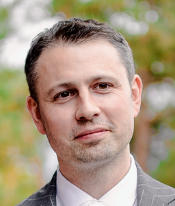
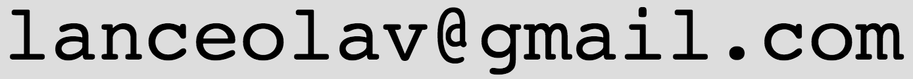

| Navn | Lance Olav Eastgate |  |
|---|---|---|
| Født | 1975 | |
| Sivilstand | Gift | |
| Statsborgerskap | Norge, New Zealand | |
| Bosted | Kristiansand S | |
| E-post |  | |
| Github | https://github.com/NorwegianKiwi |
| 2019 – |
Seniorutvikler hos Inkrement AS.
Front-end og back-end utvikler hovedsaklig på campus.inkrement.no, en norsk læringsplattform for omvendt undervisning. IKT erfaring inkluderer: MS SQL Server DB, C#, .NET Framework, Github, Windows. |
|---|---|
| 2014 – 2018 |
Seniorutvikler hos Inspera AS, Oslo.
Siden mars 2015 har jeg vært utleid 100% til Utdanningsdirektoratet, der jeg har jobbet med å forbedre den tekniske løsningen (både front-end og back-end) til de digitale prøvene gitt til alle grunnskoler og videregående skoler i Norge. En del av denne jobben har vært å utvikle et nytt forfatterverktøy til leseprøvene, og å gjennomføre nødvendig brukeropplæring. I tillegg til dette har jeg også jobbet med web-grensesnittet til Inspera Assessment, et digitalt eksamenssystem for universiteter og høyskoler. IKT-erfaring inkluderer: Oracle DB, Java EE, WebLogic, React, Redux, Webpack, Sass, ES6, Github, TeamCity, Artifactory, Gradle, Bash/Linux. |
| 2013 – 2014 | Lektor i fysikk, matematikk og naturfag ved Oslo Handelsgymnasium. |
| 2005 – 2013 |
Systemanalyse, prosjektstyring, utvikling og programmering i RoomSketcher
AS, Oslo.
IKT-erfaring inkluderer:
C++, C#, MySql, PHP, 3D programmering (Ogre3D,
Unity, Cg shading language, OpenGL,
Autodesk 3ds Max), samt et informatikk-kurs ved UiO, våren 2012:
INF3100 - Database systems (karakter: A).
|
| 2004 – 2005 |
Forskning, programmering og dataanalyse hos Intelligent Trading AS, Oslo.
IKT-erfaring inkluderer: Visual Basic (VBA/Excel).
|
| 2003 |
Fysikklærer ved Kaplan, Inc., Santa Barbara, CA, USA.
Underviste fysikk til studenter som skulle ta "the Medical College Admissions Test"
(MCAT),
den amerikanske inngangseksamen i medisin.
|
| 1999 | Gruppelærer i fysikk ved Cornell University, Ithaca, NY, USA. |
| 1996 – 1998 | Gruppelærer i matematikk og fysikk ved Universitetet i Oslo. |
| 1991 – 1998 | Privatlærer i matematikk og fysikk, ungdomsskole- til universitetsnivå. |
| 1999 – 2004 |
Ph.D. i numerisk faststoffysikk ved Cornell University, Ithaca, NY, USA.
Teoretisk og numerisk modellering av amorfe materialer, oppsprekking og deformasjon. Avhandling: "Large-scale deformation and stress localizaton in amorphous solids." En del av tiden ble tilbrakt som gjesteforsker ved UCSB (University of California, Santa Barbara). Stipendiat, Norges forskningsråd. |
|---|---|
| 1997 – 1998 |
Cand. Scient. i numerisk faststoffysikk ved Universitetet i Oslo.
Hovedfagsoppgave: "Wall Effects in Two-Dimensional Molecular Dynamics Simulations." Karakter: 1.1 (skriftlig og muntlig). [Skala: 1–6 der 1.0 er best og 1–4 er bestått.] |
| 1994 – 1996 |
Cand. Mag. ved Det Matematisk-Naturvitenskapelige Fakultetet, Universitetet i Oslo.
Gjennomsnittskarakter: 1.3. [Skala: 1–6 der 1.0 er best og 1–4 er bestått.]
|
| 1992 – 1994 | International Baccalaureate ved Berg Videregående Skole, Oslo. |
| 2015 – |
Frivillig i Lær Kidsa Koding.
Hovedutvikler og koordinator for de nye oppgavesidene. Har også vært frivillig i Kodeklubben Oslo der jeg hjalp til å undervise kurs i python for barn og ungdom. |
|---|---|
| 2015 | Frivillig i Mattesenter. |
| 2004 – 2012 | Deltidsjobb som instruktør ved Studentidretten, Universitetet i Oslo. |
| 2005 – 2010 | Styremedlem og styreleder i Sameiet Fredensborgveien 41B, Oslo. |
| 1995 – 1998 | Styremedlem i Forbundet Unge Forskere. |
| 1995 – 1997 | Initiativtaker og prosjektleder for Space Camp Andøya ved Andøya Rakettskytefelt. |
- Norsk og engelsk: morsmål, flytende både skriftlig og muntlig (tospråklig).
- Fransk: grunnleggende (6 års skolegang).
- Italiensk: grunnleggende (ukentlig kveldsskole 2008–2011).
| 1997 | Deltager under Stockholm International Youth Science Seminar (SIYSS), avholdt i forbindelse med Nobelprisutdelingen. |
|---|---|
| 1994 | 4. pris i den norske finalen av Abelkonkurransen i matematikk. |
| 1994 | Deltager (én av seks) på det norske matematikklaget under den 35. internasjonale matematikkolympiaden (IMO) i Hong Kong. |
| 1994 | 2. pris i Unge Forskere konkurransen for oppgaven "Sound Reduction in a Tube by Destructive Interference". |
-
L. O. Eastgate, J. P. Sethna, M. Rauscher, T. Cretegny, C.-S. Chen, and C. R. Myers
"Fracture in mode I using a conserved phase-field model"
Phys. Rev. E 65, 036117 (2002)
-
L. O. Eastgate, J. S. Langer, and L. Pechenik
"Dynamics of Large-Scale Plastic Deformation and the Necking Instability in Amorphous Solids"
Phys. Rev. Lett. 90, 045506 (2003)
Oppgis ved forespørsel.